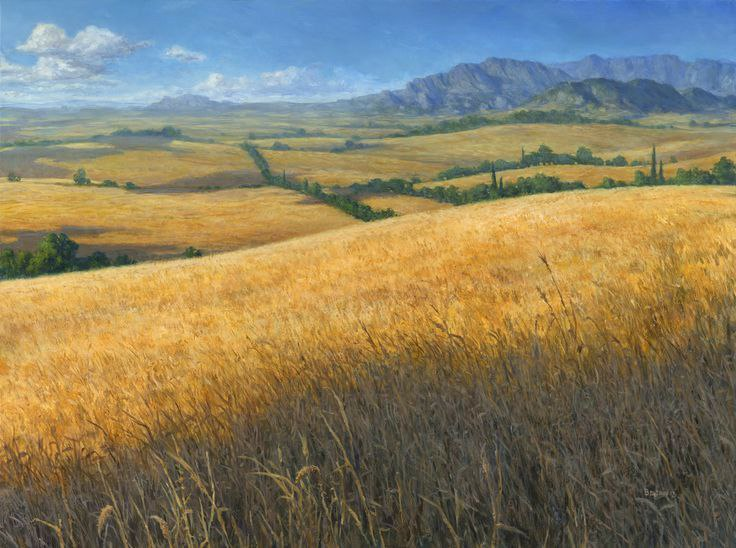
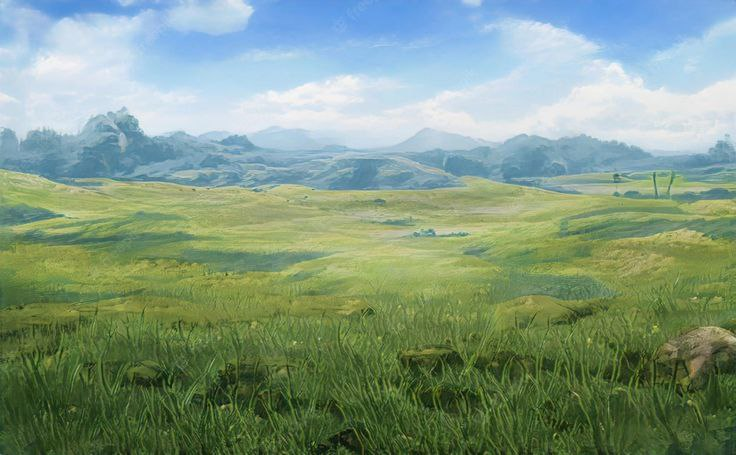
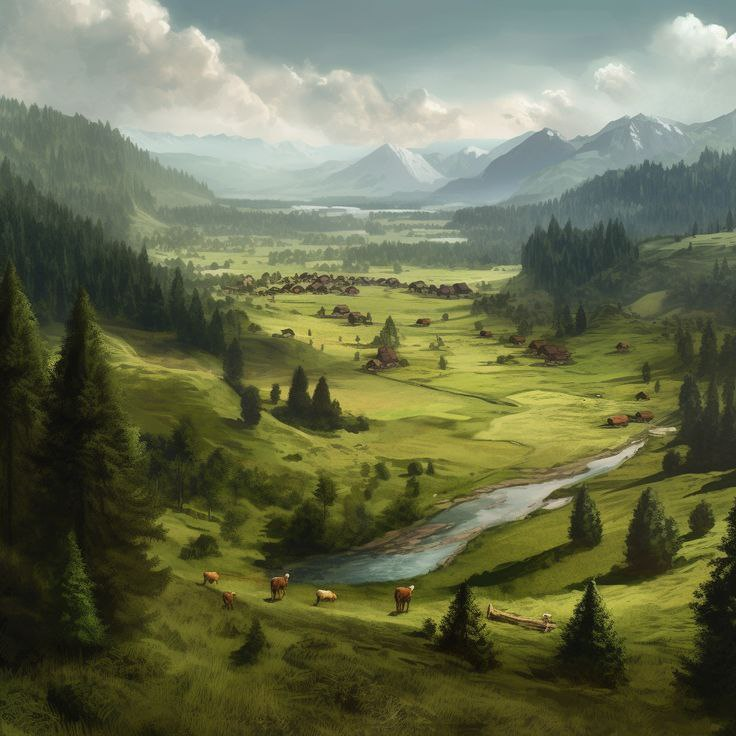

Местные пейзажи зеленеют почти круглый год: мягкий, умеренный климат делает эти земли благодатными для земледелия и скотоводства. Здесь растёт пшеница, ячмень, рожь, лен, а по пастбищам лениво бродят стада коров, коз, овец и местных равнинных буйволов. Всё это подпитывается множеством мелких речек, ручьёв и прудов, которые не только насыщают землю, но и дают жизнь рыбному промыслу.
Идрийские равнины нижние

Добро пожаловать в Идрийские равнины нижние!
Идрийские равнины — это безмятежное, открытое пространство, где время как будто бы замедляется по сравнению с крупными городами Эона. Это один из самых обжитых и мирных уголков Средиземья. Здесь, между Викселем и Идрием, простираются широкие пастбища, пологие холмы, бескрайние поля с золотыми злаками и лоскутное одеяло деревень, уютно рассыпавшихся вдоль трёх главных дорог.
Природа

Инфраструктура

В нижних равнинах существует множество деревень и хуторов, таких как "Окольное", а между двумя крупнейшими городами королевства даже раскинулся небольшой посёлок "Равнинное" — крупнейший из всех, где сходятся основные торговые потоки. Дома здесь каменные, а крыши черепичные. Церкви и монастыри возвышаются над полями, а звон колоколов их раздаётся далеко в утренних туманах. Здесь много мельниц. Их лопасти крутятся под ветром и водой, перемалывая урожай в муку, которая питает половину королевства. В нижних равнинах активно работают лесопилки, рубящие как прибрежные прилески, так и большие леса. А под землёй, в старых шахтах, добываются каменные породы, нужные для строительства и ремёсел. Три главные дороги — северная (ведущая к Идрийскому лесу), южная (в сторону Тихой пущи), и центральная (между Викселем и Идрием) — находятся в относительно хорошем состоянии, а между ними переплетена масса тропинок и просёлков, где могут поджидать неожиданные опасности в лице разбойников или каких-нибудь троллей.
Опастности

Меланхоличная красота равнин обманчива. За цветущими полями и пасторальными пейзажами скрываются мрачные погосты и старинные кладбища, порой настолько, что камни на них покрыты мхом и имен на надгробных плитах уже не разобрать. Эти места, как правило, тихи и тревожны, ведь волкалаки, тени и ночные твари чувствуют к ним тягу. Вдали от крупных путей, в заброшенных хуторах и у опушек, прячутся лагеря наёмников, дичекрадов и изгнанников, которые промышляют набегами на деревни и заблудших путников. Иногда среди них попадаются и колдуны, и беглые преступники.
Так что...
Несмотря на общую мирность этих мест, опасность всегда поджидает неосторожных где-то рядом.